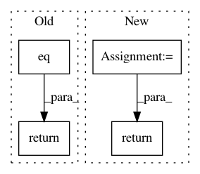

74cbc5f9153113a4a08a389e7d604f55a2647b1b,snntoolbox/core/inisim.py,,get_new_thresh,#Any#,221
Before Change
def get_new_thresh(self):
Get new threshhold.
return theano.ifelse.ifelse(
t.eq(self.time / settings["dt"] % settings["timestep_fraction"], 0) *
t.gt(self.max_spikerate, settings["diff_to_min_rate"] / 1000) *
t.gt(1 / settings["dt"] - self.max_spikerate,
settings["diff_to_max_rate"] / 1000),
self.max_spikerate, self.v_thresh)
def get_time(self):
Get simulation time variable.
After Change
Get new threshhold.
thr_min = 0.5
thr_max = 1.0
r_lim = 1 / settings["dt"]
return thr_min + (thr_max - thr_min) * self.max_spikerate / r_lim
// return theano.ifelse.ifelse(
// t.eq(self.time / settings["dt"] % settings["timestep_fraction"], 0) *
// t.gt(self.max_spikerate, settings["diff_to_min_rate"] / 1000) *
In pattern: SUPERPATTERN
Frequency: 4
Non-data size: 4
Instances
Project Name: NeuromorphicProcessorProject/snn_toolbox
Commit Name: 74cbc5f9153113a4a08a389e7d604f55a2647b1b
Time: 2017-04-21
Author: bodo.rueckauer@gmail.com
File Name: snntoolbox/core/inisim.py
Class Name:
Method Name: get_new_thresh
Project Name: pytorch/pytorch
Commit Name: 5b648ef909fbf89c53f28ebc1b3bd2f4fde168c5
Time: 2021-03-12
Author: nshulga@fb.com
File Name: torch/onnx/symbolic_opset9.py
Class Name:
Method Name: embedding
Project Name: rodluger/starry
Commit Name: b5ebc7710a0524c30a5f982267d30aa32d1b5a0b
Time: 2019-06-20
Author: rodluger@gmail.com
File Name: starry/ops/ops.py
Class Name: Ops
Method Name: align
Project Name: rusty1s/pytorch_geometric
Commit Name: 776f891afa3e7bfe2ae456c064e0867c4987c762
Time: 2020-06-30
Author: matthias.fey@tu-dortmund.de
File Name: examples/rgcn.py
Class Name:
Method Name: test